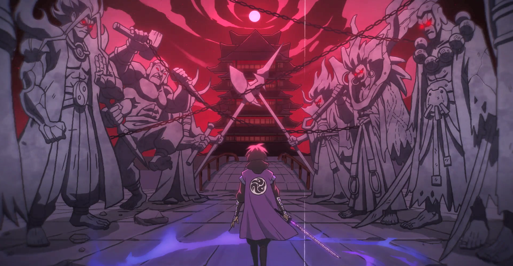

动漫简介
《刺客伍六七》是一部以寻找失去的记忆为主线的原创网络动画，讲述了主人公伍六七在帮助别人和寻找自我的过程中，认识不同的人，与不同角色之间发生的有趣故事，最终用爱化解仇恨与偏见。
伍六七，失忆前是玄武国刺客联盟的首席暗影刺客，代号“柒”，失忆后成了大保发廊的高级发型师。他虽然经常接些乱七八糟的廉价任务，但伍六七是一个假贱贱、真温柔、热血的短裤男。没有记忆的伍六七，身世成谜，在大保发廊做理发师，身体能伪装成任何形态，为了寻找自己的过去，走上了刺客之路。伍六七的冒险故事充满了幽默、热血和情感。他在执行刺杀任务的过程中，常与刺杀对象发生一系列有趣的意外事件，每次任务都被搞得乱七八糟。尽管伍六七从来没有成功完成过刺杀任务，但他每次都能意外的化解雇主的仇恨。在这个过程中，伍六七看到了很多人，经历了很多事，开始渐渐的认清自我。
上映时间
- 《伍六七》 2018年4月25日
- 《伍六七之最强发型师》 2019年10月23日
- 《伍六七之玄武国篇》 2021年1月27日
- 《伍六七之暗影宿命》 2023年1月18日